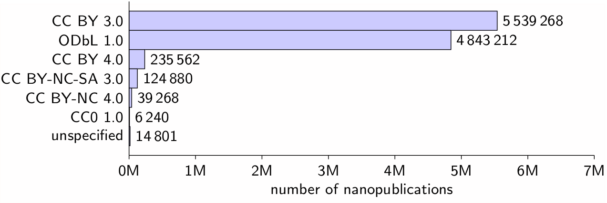
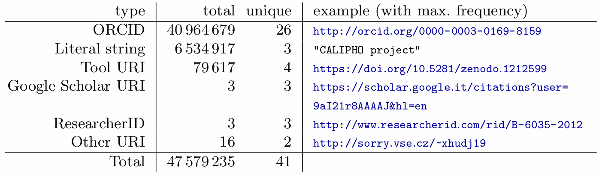
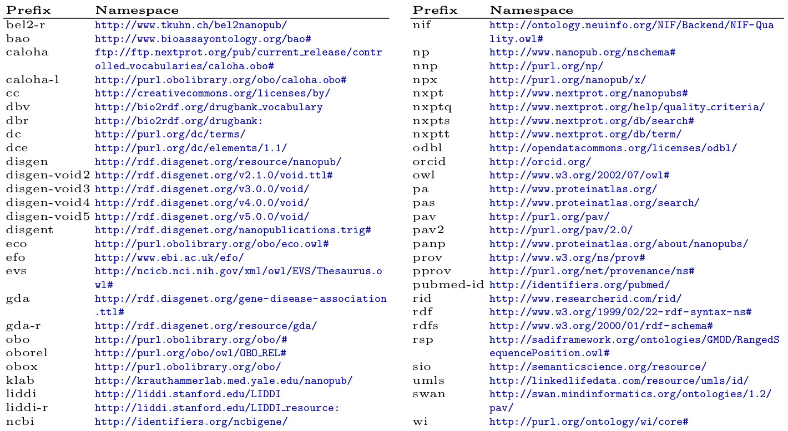
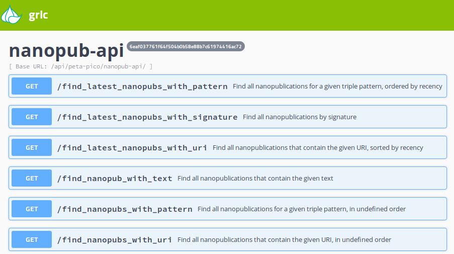

Nanopublications: A Growing Resource of Heterogeneous Provenance-Centric Linked Data
Tobias Kuhn, Albert Meroño-Peñuela, Alexander Malic, Jorrit H. Poelen, Allen H. Hurlbert, Emilio Centeno, Laura I. Furlong, Núria Queralt, Christine Chichester, Juan Banda, Egon Willighagen, Friederike Ehrhart, Chris Evelo, Tareq Malas, Michel Dumontier
IEEE eScience 2018, Amsterdam, 30 October 2018
More than 10 Million Nanopublications

Nanopublication Example

10 803 231 Nanopublications from Different Sources
- Around 11 different major sources
- Plus some "loose" nanopublications
- Most are extracted from existing RDF resources, but some are "nano-born"
Global Biotic Interactions (GloBI)
Initiative to improve access to species interaction data with an automated collection procedure.
79 502 nanopublications subdivided into 5 subsets
DrugBank via Bio2RDF
Drug-drug interactions, drug targets, and food interactions with detailed provenance of the automatic transformation.
39 268 nanopublications subdivided into 5 subsets
Small Kidney Disease Dataset
Meta-analysis of polycystic kidney disease expression profiles derived from sequenced mouse RNA data. nano-born
1657 nanopublications
Small Rare Disease Dataset
Manually curated dataset on monogenic rare diseases and their genes. nano-born
4583 nanopublications
OpenBEL

Data converted from the Biological Expression Language (BEL) format from resources provided by the OpenBEL initiative.
74 173 nanopublications in latest version of overall 2 versions, each subdivided into 2 subsets
Human Protein Atlas (HPA)
Extracted from a subset (covering the immunohistochemistry results) of the Human Protein Atlas dataset on genome-wide analyses of human proteins.
1 254 468 nanopublications
neXtProt
Extraction of a subset of the neXtProt database, a high-quality corpus of data describing human proteins.
4 025 981 nanopublications
GeneRIF/AIDA
Nanopublications with sentences in a controlled natural language that were generated from input of the GeneRIF dataset on gene functions.
156 026 nanopublications
DisGeNET
Extracted from the DisGeNET dataset on human gene-disease associations from different sources (manual as well as text-mined).
1 469 541 nanopublications in latest version of overall 4 versions
WikiPathways
Extracted from WikiPathways, a collaborative database for biological pathways.
17 147 nanopublications in latest version of overall 21 versions, each subdivided into 3 subsets
LIDDI
A nano-born dataset on Linked Drug-Drug Interactions.
98 085 nanopublications in latest version of overall 2 versions
Overall Statistics
- 10 803 231 nanopublications
- 378 654 287 triples
- 61 184 484 in the assertion triples
- 122 229 003 in the provenance triples
- 136 738 995 in the publication info triples
- Average size of nanopublication: 35.1 triples
Analysis with SPARQL
prefix npx: <http://purl.org/nanopub/x/>
prefix dc: <http://purl.org/dc/terms/>
prefix np: <http://www.nanopub.org/nschema#>
prefix dct: <http://purl.org/dc/terms/>
select (count(distinct ?np) as ?count) ?license where {
graph ?h {
?np a np:Nanopublication .
?np np:hasPublicationInfo ?i .
}
graph ?i {
?np (dct:license|dct:rights) ?license .
}
} group by ?license order by ?count
Licenses
Creators
Namespaces
Nanopublication API
Envisioned Decentralized Architecture